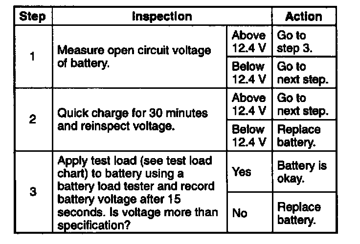
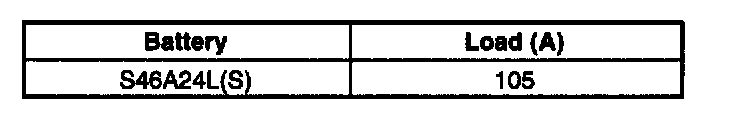
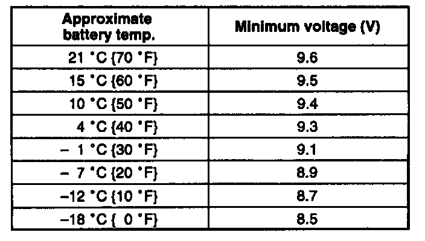

Battery: Testing and Inspection
BATTERY INSPECTION
Battery
- Check the battery in the following procedure.

Test load chart

Battery positive voltage with load
Dark Current
1. Verify that the ignition switch is at the OFF position and that the ignition key has been removed.
2. Disconnect the negative battery cable.
CAUTION: Operating electrical loads while measuring the dark current can damage the circuit tester.
3. Measure the dark current between the negative battery terminal and the negative battery cable.
Dark current 20 mA max.
4. If the current exceeds the maximum, remove the fuse in the main fuse block and the fuse block one by one while measuring the dark current.
5. Inspect and repair harnesses and connectors of the fuse at which the current reduces.